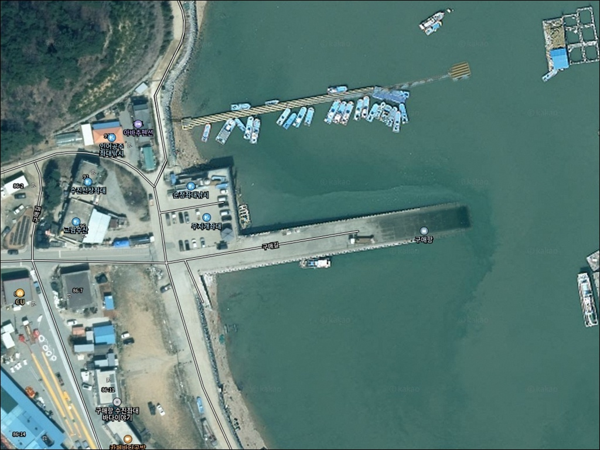
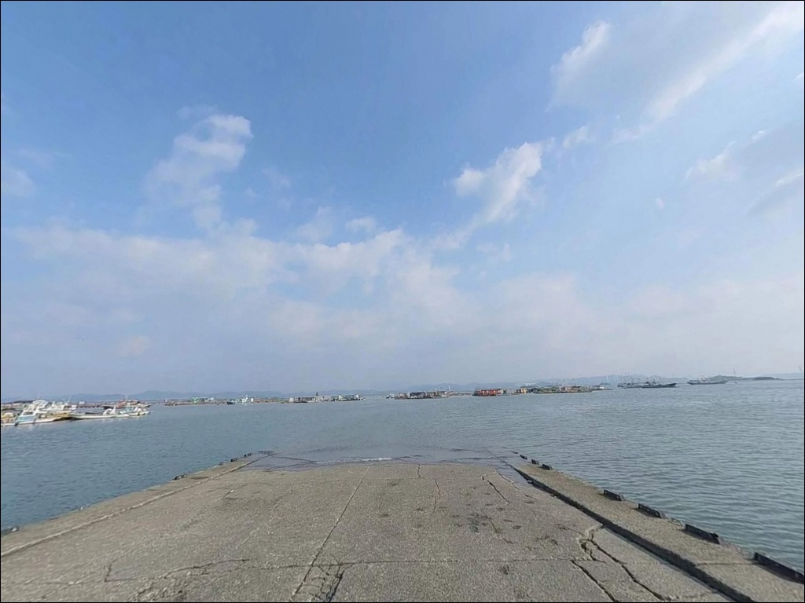
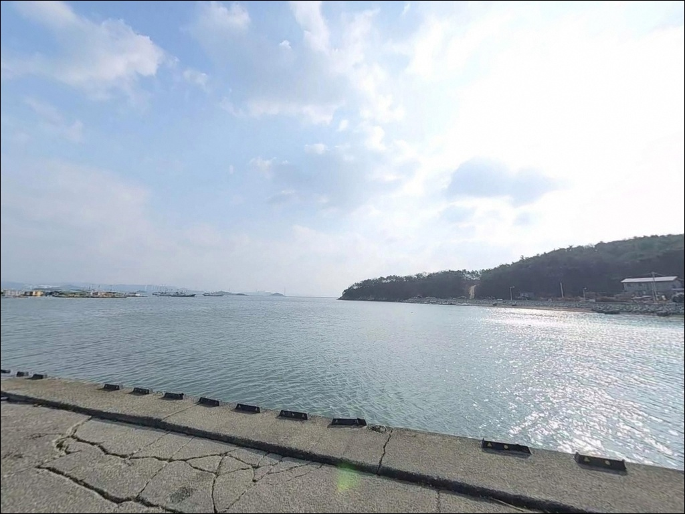
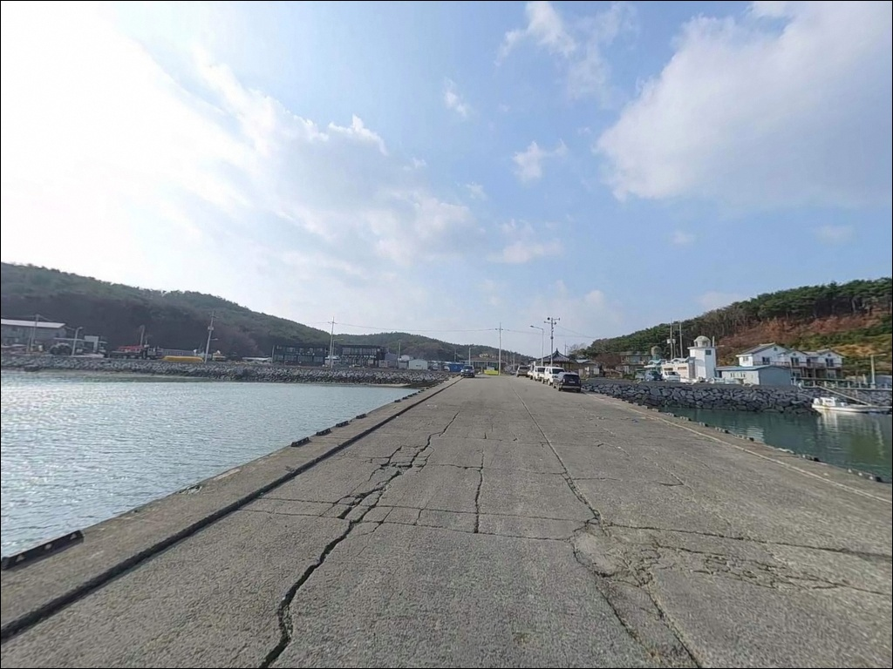
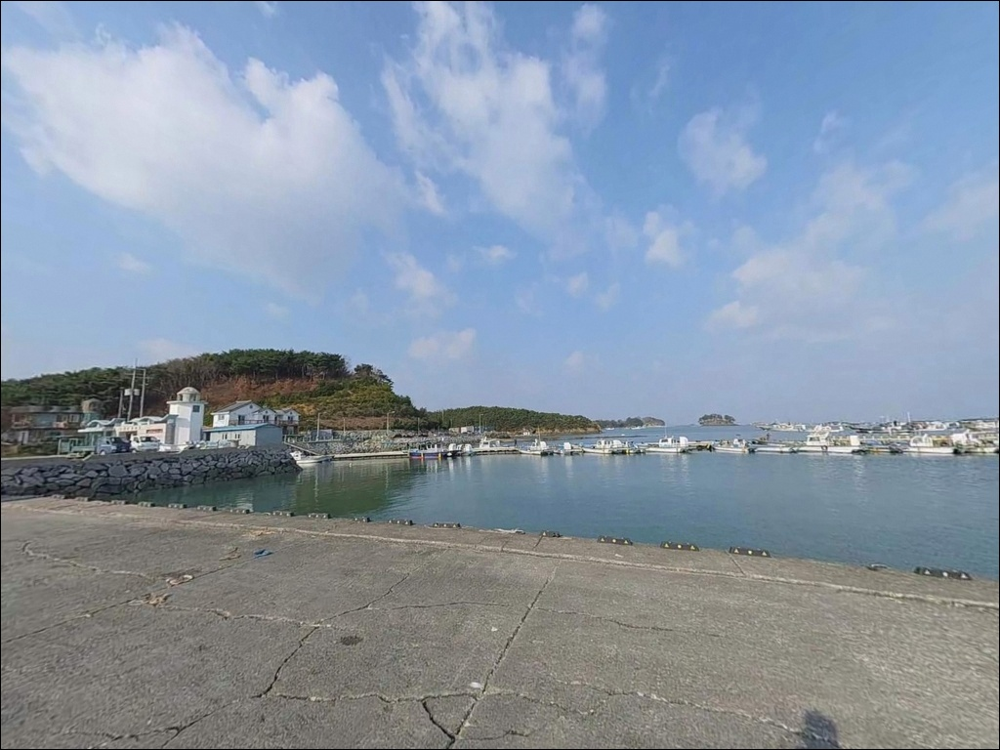
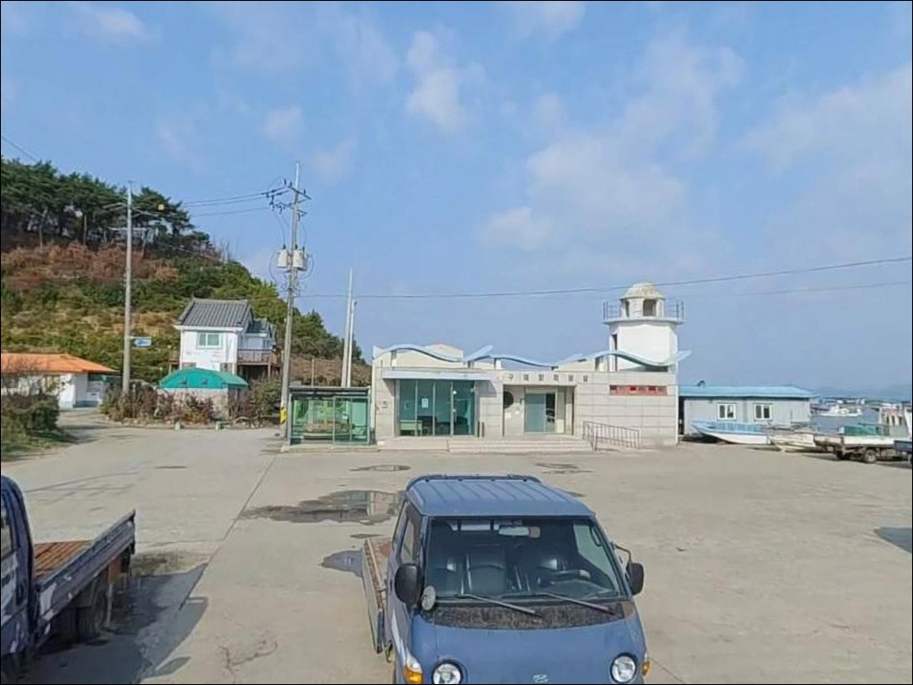
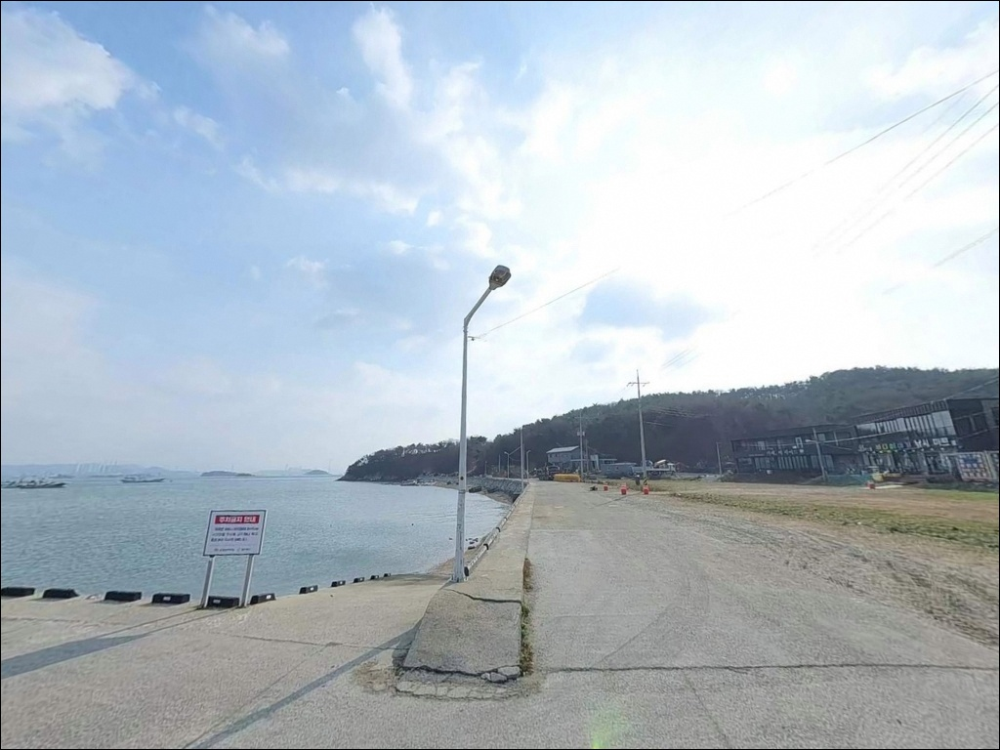
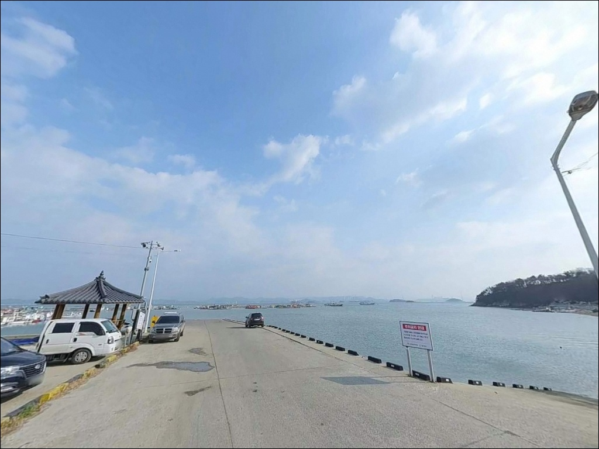
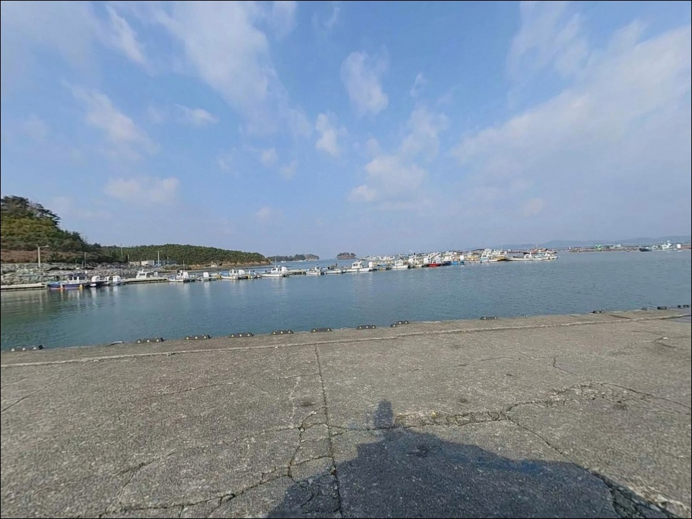

구매항, 충남 태안군 고요함이 매력인 차박, 낚시 감성 장소
이 페이지에는 광고(제휴 링크 포함)가 있으며, 광고 링크를 통해 구매하면 운영자가 판매 수익 또는 수수료를 받을 수 있습니다. 포인트 사진: 카카오맵 스카이뷰·로드뷰. 이 페이지의 지도·사진 이미지는 카카오맵의 실제 서비스 이미지와 다를 수 있습니다.


포인트 안내
구매항
충남 태안군 고남면 고남리 26-6
물양장 저지대에 차를 세운 채 낚시를 즐기다 돌아오면,
대조기 만조 때 바닷물이 차 주변까지 차오르는 상황이
이 포인트에서 실제로 발생한 사례가 있습니다.
물때 계산 없는 저지대 주차가
출조 전체를 망치는 구매항만의 특수 변수입니다.
구매항은 안면도 동쪽 내해에 자리한
소형 비지정 어항입니다.
선착장과 갯바위, 그리고 앞바다의 해상 좌대낚시터를
함께 운영 중인 포인트로,
갑오징어·쭈꾸미 에깅과 원투낚시가
이 항구의 주요 낚시 스타일입니다.
이 글은 구매항의 진입 동선과 주차 안전 기준,
낚시 여건 분석을 중심으로 정리합니다.
조황 단정이나 특정 어종 보장은
이 글의 범위에 포함되지 않습니다.

1. 진입 동선과 주차 위치 판단
안면대로에서 구매길로 접어들면
논밭 사이를 따라 이어지는 마을 진입도로가 나옵니다.
포장이 되어 있어 일반 승용차나 SUV 기준으로는
진입 자체에 큰 어려움이 없는 편입니다.
다만 도로 폭이 좁은 구간이 있어
대형 차량이나 카라반이라면
출발 전 도로 상황을 미리 확인하는 것이 안전합니다.
구매항에서 가장 먼저 결정해야 할 것은
주차 위치입니다.
선착장(물양장) 인근 저지대는
대조기 만조 시 바닷물이 올라오는 구간이며,
해경이 수차례 주의를 요청한 이력이 있는 곳입니다.
당일 물때를 미리 확인하고,
만조 시각대가 체류 시간과 겹친다면
진입로 상단이나 도로변 공터처럼
침수 위험이 낮은 구간에 자리를 잡는 것이 원칙입니다.
항 내부는 공터와 선착장 인근 평지가 있어
소형 차량 기준 회차는 가능한 수준입니다.
좌대낚시터 이용 차량도 함께 드나드는 공간이라
혼잡한 주말에는 주차 여유가 줄어들 수 있습니다.

2. 차박 환경과 야간 체류 여건
구매항 주변은 가구 수가 적고 외진 편으로,
야간에 차량 통행이 줄어들면
조용한 어촌 분위기가 이어집니다.
좌대낚시 업체와 낚시방이 항 인근에 운영되고 있어
낚시인이 드나드는 생활형 소항구 분위기이며,
완전한 외딴 포인트와는 성격이 다릅니다.
야간 조명은 어선 작업 관련 조명이 일부 있을 가능성이 있어
완전한 암흑 환경은 아닐 수 있습니다.
갯바위나 선착장 끝단으로 이동할 때는
개인 헤드랜턴을 반드시 챙겨야 합니다.
야간 방문 시 바람 영향도 시간대별로 달라질 수 있어
기상 예보는 당일 아침 다시 확인하는 것이 좋습니다.
차박을 메인으로 삼을 경우,
주차 공간이 여유 있지 않아
현장 여건을 직접 확인한 뒤 결정하는 편이 현실적입니다.
물때에 따라 저지대 상태가 달라지므로
하룻밤 체류를 계획한다면
주차 위치 선정이 반드시 선행되어야 합니다.


3. 주변 편의시설 및 인프라 현황
항구 인근에 낚시방이 있어
미끼와 기본 낚시 소품을 현장에서 구할 수 있습니다.
생새우를 포함한 미끼 구입이 가능하다는 안내가 확인되어 있어
에깅이나 좌대낚시 채비를 현장에서 보충하는 것도 가능합니다.
낚시방 운영 현황은 현장에서 직접 확인하는 편이 확실합니다.
반경 3km 안에 고남 하나로마트가 있어
안면대로 진입 전에 들르면
동선을 크게 늘리지 않고도
식자재와 보급품을 챙길 수 있습니다.
얼음, 식수, 연료는 출발 전에 미리 갖춰두는 것이
이 포인트 방문의 기본 준비입니다.
구매항 인근에 편의점이 있다는 안내가 있으나
운영 상황은 현장에서 확인하는 것이 확실합니다.
영목항(5~10분 거리)까지 이동하면
좀 더 다양한 편의시설을 이용할 수 있어
부족한 물자가 생겼을 때의 대안으로 활용할 수 있습니다.

4. 만조에 차량이 잠기는 포인트,
방문 전 반드시 확인할 것들
구매항 방문에서 가장 먼저 확인할 것은 물때입니다.
서해 특성상 간조와 만조 사이 수위 차가 크고,
이 포인트는 대조기 만조 때
저지대 침수 이력이 있습니다.
바다타임에서 고남면 기준 물때를 확인하고,
만조 시각과 체류 시간이 겹치지 않도록
출발 시각을 조율하는 것이 기본 전략입니다.
서해 소형 어항 구조상 간조 때에는
갯벌이 드러나며 낚시 자리가 좁아지는 경우가 있습니다.
만조 전후 2~3시간이 수심이 올라와
선착장 낚시 여건이 나아지는 타이밍입니다.
입장 시각을 이 구간에 맞추면
채비 운영이 더 수월해집니다.
갯바위 구간으로 이동할 계획이라면
미끄럼 방지 신발과 헤드랜턴은 필수입니다.
어선 이동 동선에 채비가 걸리지 않도록
자리를 잡는 것이 이 포인트의 기본 매너이며,
낚싯줄 관리에 각별히 신경 써야 합니다.
구명조끼는 선착장 끝단과 좌대 이용 모두에서 필수 착용 조건입니다.

5. 지형 기반 낚시 여건 분석
구매항은 안면도 동쪽 내해에 열린 소형 선착장 구조입니다.
외해에 직접 노출되기보다는
만 안쪽에 위치해 파도 영향이 적은 편이며,
내만형 잔잔한 수면 여건을 갖추고 있습니다.
선착장 인근 수심은 3~5m 내외로 추정되며,
간조 때에도 어느 정도 수심이 유지되는 구조로 보입니다.
선착장 오른쪽 끝은 야산이 막고 있고,
왼쪽 방향이 외해로 더 열려 있는 형태입니다.
앞바다에는 가두리 양식장과 해상 좌대가 분포해 있어
선착장에서 채비를 던질 때는
이 구조물들의 위치를 의식하며
방향을 잡아야 합니다.
갯바위 지형이 선착장과 연결되어 있어
조류 흐름이 살아 있는 구간에서는
루어 반응이 달라질 수 있습니다.
정조 직전과 직후, 조류가 움직이기 시작하는 타이밍이
이 포인트에서 입질 가능성이 높아지는 조건입니다.
안면도 내해 특성상 파도 영향이 적은 잔잔한 수면 조건이
에깅과 원투낚시 채비 운영에 유리한 환경을 만듭니다.
방문 전 최신 조황은 반드시 검색으로 먼저 확인하십시오.


6. 포인트에 적합한 낚시 스타일
이 포인트에서 가장 특화된 낚시는 에깅입니다.
갑오징어와 쭈꾸미를 대상으로 하는 에기 채비가
선착장 낚시와 해상 좌대 모두에서 활용되며,
늦여름부터 가을 사이 활성도가 높아지는 시기와
잘 맞는 낚시 스타일입니다.
선착장 끝단에서 채비를 멀리 던진 뒤
조류 방향을 따라 천천히 탐색하는 방식이 기본입니다.
원투낚시도 이 포인트에 잘 어울립니다.
선착장 끝단이나 갯바위 쪽에서 채비를 멀리 보내면
우럭이나 노래미 계열 바닥 어종을
기대해볼 수 있는 수심 구간이 나옵니다.
조류가 느려지는 정조 타이밍에
채비를 고정해두고 바닥을 탐색하는 방식이 맞습니다.
찌낚시는 선착장 내측의 잔잔한 구간에서
시도해볼 만한 스타일입니다.
내항 안쪽으로 드나드는 숭어 계열 어종을
가볍게 운영하는 찌 채비로 탐색하기에
내만형 수면 구조가 어울립니다.

7. 대안 포인트와 플랜 B 동선
구매항 현장 여건이 맞지 않을 때
가장 먼저 이동할 곳은 영목항입니다.
차로 5~10분 거리에 있으며
구매항보다 규모가 크고
낚시 인프라가 풍부한 편입니다.
방파제와 갯바위, 선상 출조까지 선택지가 다양해
구매항에서 해결하지 못한 낚시 스타일도
이곳에서 다시 시도할 수 있습니다.
영목항 방파제는 조류 소통이 좋고
수심이 비교적 깊어
원투낚시와 루어낚시 모두 여건이 나은 편입니다.
야간에는 볼락 계열 어종을 노리는
라이트게임 포인트로도 활용되어,
구매항에서의 에깅과 영목항 야간 라이트게임을
묶어서 움직이는 동선도 이 권역에서 유효합니다.
고남면 일대에는 유사한 구조의
소형 항구와 선착장이 여럿 분포해 있습니다.
바람 방향이나 물때에 따라
한 포인트에 집중하기보다 이동하면서
조건이 맞는 자리를 찾는 전략이
이 권역에서는 현실적인 방식입니다.
구매항 물양장 저지대는 대조기 만조 시 침수될 수 있어,
주차 전 당일 물때 확인이 방문의 첫 번째 조건입니다.

안면도 내해 소항구,
준비한 만큼 만족도가 달라집니다
에깅이나 원투낚시 위주의 낚시인이라면
구매항의 내만형 잔잔한 수면 조건이
채비 운영에 부담이 적어 잘 맞는 편입니다.
해상 좌대까지 선택할 수 있어
낚시 스타일을 현장에서 유연하게 바꾸기도 좋고,
낚시방에서 미끼를 구할 수 있어
채비 보충도 가능한 포인트입니다.
반면 대형 차량이나 카라반을 이끌고
차박 메인으로 접근할 경우에는
현장 여건 확인이 먼저입니다.
주차 공간이 여유 있지 않고,
대조기 만조 때 저지대 침수 가능성이 있어
물때 확인과 주차 위치 선정,
이 두 가지가 방문 전 가장 중요한 사전 작업입니다.
낚시를 마친 뒤 항구 분위기 속에서
조용히 하룻밤 머무는 여행자라면,
저지대 외 구간에 자리를 잡고
물때만 미리 확인해두면
잔잔한 내해와 함께하는 출조로 기억될 수 있는 곳입니다.